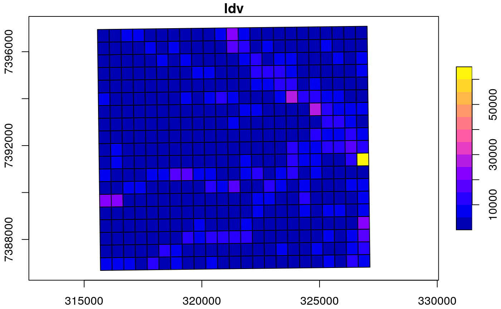
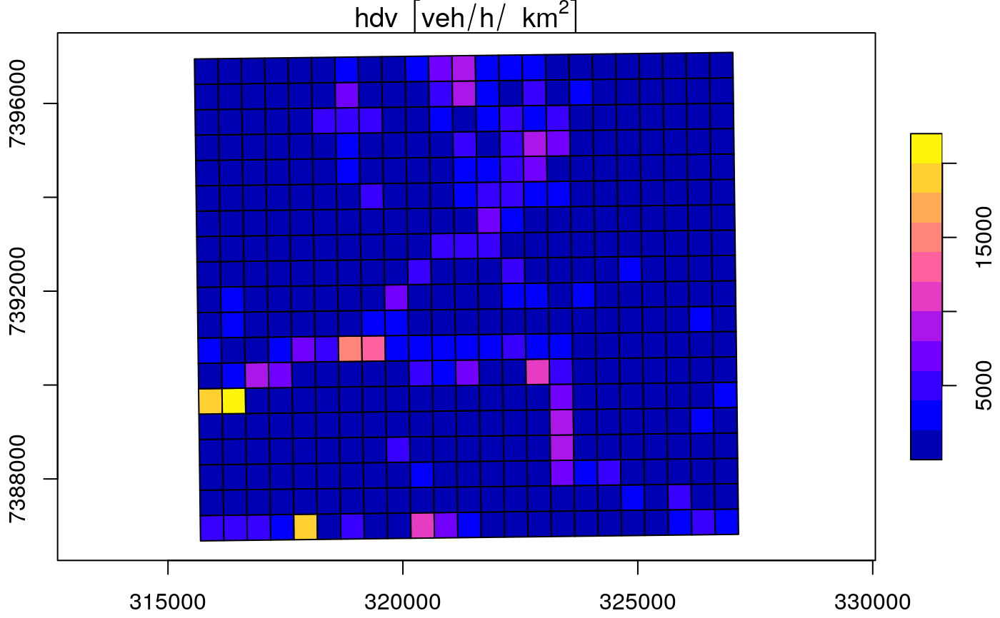

Allocate emissions into a grid
emis_grid.Rdemis_grid allocates emissions proportionally to each grid
cell. The process is performed by intersection between geometries and the grid.
It means that requires "sr" according with your location for the projection.
It is assumed that spobj is a Spatial*DataFrame or an "sf" with the pollutants
in data. This function returns an object of class "sf".
emis_grid(spobj = net, g, sr, type = "lines", FN = "sum")
Arguments
| spobj | A spatial dataframe of class "sp" or "sf". When class is "sp" it is transformed to "sf". |
|---|---|
| g | A grid with class "SpatialPolygonsDataFrame" or "sf". |
| sr | Spatial reference e.g: 31983. It is required if spobj and g are not projected. Please, see http://spatialreference.org/. |
| type | type of geometry: "lines", "points" or "polygons". |
| FN | Character indicating the function. Default is "sum" |
Note
1) Emissions are returned as flux = mass / area / time (implicit), time untis are not displayed because each use can have different time units for instance, year, month, hour second, etc.
2) Therefore, it is good practice to have time units in 'spobj'. This implies that spobj MUST include units!.
3) In order to check the sum of the emissions, you must calculate the grid-area in km^2 and multiply by each column of the resulting emissions grid, and then sum.
Examples
{ data(net) g <- make_grid(net, 1/102.47/2) #500m in degrees names(net) netsf <- sf::st_as_sf(net) netg <- emis_grid(spobj = netsf[, c("ldv", "hdv")], g = g, sr= 31983) plot(netg["ldv"], axes = TRUE) plot(netg["hdv"], axes = TRUE) netg <- emis_grid(spobj = netsf[, c("ldv", "hdv")], g = g, sr= 31983, FN = "mean") plot(netg["ldv"], axes = TRUE) plot(netg["hdv"], axes = TRUE) if (FALSE) { library(sf) library(data.table) library(raster) library(stars) g <- readRDS("/media/sergio/ext5/gd03.rds") net <- fread("/media/sergio/ext5/edgar_ecb05_opt1/2012/extracted/ALD.csvy") net$layer <- net$layer*1e12 net <- rasterFromXYZ(net) net <- crop(net, as_Spatial(g)) net <- st_as_stars(net) net <- st_as_sf(net, crs = 4326) st_crs(net) <- 4326 netg <- emis_grid(net, g, type = "polygons") } }#> Number of lon points: 23 #> Number of lat points: 19 #>#>#>#>#> Sum of street emissions 2095073 #> Sum of gridded emissions 2095073#>#>#>#> Sum of street emissions 2095073 #> Sum of gridded emissions 2095073